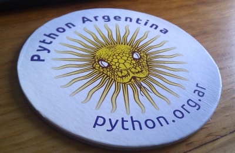

| Autor: | Mariano Reingart |
|---|---|
| Email: | reingart@gmail.com |
La descordinación y la falta de estructura que presenta PyAr, impacta bastante en lo que conlleva una conferencia. (Esto es a modo de autocrítica en la que nos incluimos este año como responsables principales por no haber podido lograr una organización de la conferencia más fluida: las responsabilidades se volvieron difusas y la toma de decisiones fue complicada).
A pesar de que en esta edición tratamos de documentar todas las normas y procedimientos de manera pública y abierta, desde la propuesta de sede, llamado a sponsors, llamado por propuestas de actividades, llamado a revisores, lamado a voluntarios, etc. (y en general, tomando versiones previas que venimos trabajando en PyAr desde 2009, o usando directamente textos de la PSF o PyCon US), la “anarquía” en algunos casos se convirtió en caos, con confrontaciones, contramarchas, caminos sin salida, etc., lo que generó divisiones, desgaste y demoras innecesarias.
Evidentemente no fue suficiente porque tuvimos planteos de disertantes, sponsors, participantes e incluso coordinadores, sobre cuestiones que estaban contempladas en estos documentos pero igualmente generaron malos entendidos.
Si bien en general, la mayoría de estos temas pudieron ser superados, generaron un nivel de ruido importante que podría haber sido evitado (o al menos canalizado de una manera más constructiva a largo plazo).
Recordar que por mucho menos se armaron varios cortocircuitos en febrero de este año, cuando alguien propuso una reunión sin seguir las “costumbres” de PyAr (armar una wiki, coordinar lugar y fecha, etc.): http://listas.python.org.ar/pipermail/pyar/2012-February/016072.html
Tener una organización más formal, no solo simplificaría el manejo de fondos, sino que también posibilitaría dejar asentadas las posiciones más claramente (por ej. en actas o su contraparte electrónica), y habilitaría decisiones más representativas; sin olvidar otros temas como delegar las tareas de secretaría, administración y contabilidad, pudiéndonos concentrar en aspectos más fundamentales.
Este fue otro tema difícil, que si bien lo publicamos (http://ar.pycon.org/2012/conference/diversity), solo sirvió para generar más ruido y en la práctica fue de difícil aplicación.
Muchos argumentan que no es necesario pero evidentemente creo que fallamos como comunidad en manejarlo porque al menos tuvimos un sponsor que no quiso participar (por ciertos comentarios “polémicos”), y una baja de una charla y posterior partida de la comunidad de una participante que no se sintió comoda (posiblemente por cuestiones de genero, hasta donde pudimos averiguar). Seguramente nunca sabremos de aquellos que se sienten intimidados por diversos motivos y directamente no participan en la conferencia.
Creo que lo peor que podemos hacer es tener una doble moral al respecto, y siguiendo las recomendaciones de la PSF (http://pyfound.blogspot.com.ar/2012/12/psf-moves-to-require-code-of-conduct.html), tendríamos que adoptar definitivamente su política de diversidad y un código de conducta, o directamente no solicitarle más fondos y llegado el caso, no usar la marca Python ni el nombre PyCon si no se comparten sus directivas, condiciones de uso y tendencias internacionales.
Recordamos que no solo es importante la cuestión de genero, sino también hay que tener en cuenta el idioma y cuestiones culturales, como reconoce Steve Holden en su entrada de blog http://holdenweb.blogspot.com.ar/2012/12/im-sorry.html, y lo que para unos puede ser una broma, para otros puede ser malentendido y/o sacado de contexto.
También agregaría de buscar diversidad en los aspectos técnicos (framework web, toolkit gui, sistema operativo, etc. etc.) como además en cuestiones personales comerciales y laborales (licencias de software, modelos de negocios, habilidades, experiencia y origenes, etc.), sin olvidar de mantener un ambiente profesional, cordial y respetuoso en todos los casos.
La inclusión y pluralidad fue unos de los objetivos de esta PyCon Argentina, y aunque al principio creo que no se entendió, el resultado ha sido positivo.
En el aspecto técnico pudimos incluir a casi todos los frameworks web (django, flask, plone, web2py), toolkits (gtk, wx) y plataformas “en la nube” (Azure, GAE, Heroku, Amazon). Lamentablemente algunos disertantes no pudieron asistir (como en el caso de gevent.socketio/pyramid) y otros decidieron no participar por distintos motivos.
En otros aspectos también pudimos tener una buena representativiidad, como el track científico y el track extremo, o stands de comunidades (incluyendo organizaciones de software libre y otras iniciativas, proyectos educativos universitarios, federación de cooperativas, etc.).
Respecto a los Sponsors, también fue variado y tratamos de buscar empresas de desarollo tradicionales como complementarias (hosting, libros, etc.).
Todo esto no fue logrado sin esfuerzo ni discusiones, y como consejo, si es que se decide seguir por este camino, la diversidad no es espontanea, y de hecho, a veces es resistida (incluso inconscientemente), por lo que creo deberíamos buscar más alternativas para que PyCon Argentina sea un evento aún más abarcativo, abierto y ameno (tratando de no confundir con temas de calidad o solo basarse en la popularidad, cosas que deberían considerarse en paralelo).
Tener en cuenta el tema de la coordinación con Python Brasil (http://2012.pythonbrasil.org.br/) (que si bien se acordaron estrategias y temas generales, incluso en persona), hubo problemas de comunicación, cambios de fecha y otros inconvenientes no menores. Contemplar que también se agregó PyCon Uruguay (http://uy.pycon.org/) sobre la hora y sin prácticamente coordinación con PyCon Argentina, y posiblemente el año que viene haya muchas otras conferencias (PyCon España, sumadas a PyCon Venezuela (http://ve.pycon.org/) y otros países que están interesados, algunos ya poniendo fechas tentativas para 2013). Si bien no deberían afectar directamente a nuestra conferencia, considerar que si podrían tener impacto en la búsqueda de Sponsors, Disertantes y participantes en general, o redundar en duplicación de esfuerzos, gastos innecesarios o solapamiento de calendarios (al menos un disertante nos comento que por ej. no pudo participar en otra conferencia dada la cercanía de fechas).